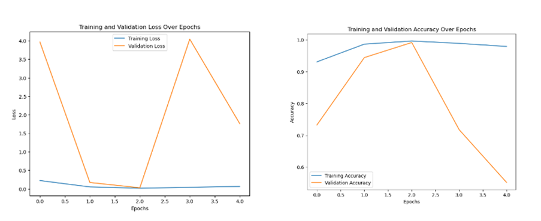
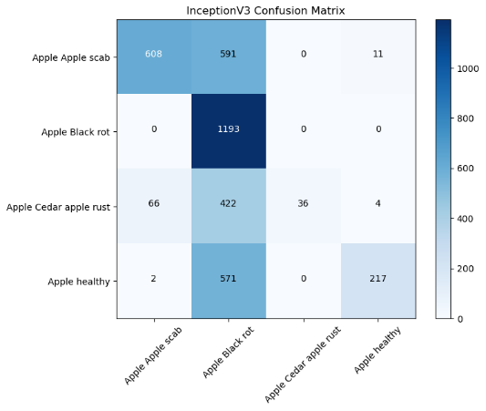

RESULTS

Considered data for Training

Original vs Augmented Images Comparison
This visualization allows a comparison between the original images and their corresponding augmented versions, side by side in pairs, showing how the augmentation techniques modify the original data

Training Progess Metrics LOSS and Accuracy
This visualization helps in assessing the training progression of a machine learning model by observing how the loss and accuracy metrics evolve over epochs. It's useful for understanding whether the model is learning effectively or if there are signs of overfitting or underfitting based on the behavior of these metrics
Model Prediction vs True Labels
This visualization allows for a qualitative assessment of a model's performance by displaying the test images alongside their true labels and the model's predictions. The title of each subplot indicates the true and predicted classes, highlighting any mismatches between the model's predictions and the actual labels in red

Evaluation Metrics Calculation
This code snippet assesses the model's performance by computing various evaluation metrics such as accuracy, precision, recall, and F1 score based on the predictions (y_pred) and true labels (y_true) obtained from a test dataset. These metrics provide insights into the model's classification performance across multiple classesPerformance Metrics
| Metric | Value |
|---|---|
| Epochs | 10 |
| Accuracy | 0.270 |
| Precision | 0.070 |
| Recall | 0.270 |
| F1 Score | 0.110 |